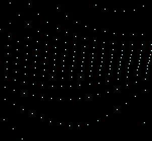
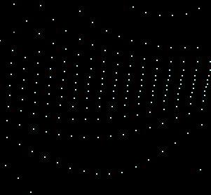

CASCADE OF POINTS
CASCADE OF POINTS: trigonometric "lace"
I wrote this program before knowing Processing or other languages dedicated to creativity. I liked the idea of creating beautiful trigonometric graphs but "far" from the periodic trend which usually features renderings based on the sine and cosine functions. So I first used a function containing third degree terms, trigonometric functions and parameters. As the values change, I DID NOT draw the graph joining the subsequent points with segments BUT I have drawn simply the points; in fact, the course of the lines would have been very confusing because at each cycle the values of Y "jump" up and down continuously. Instead the points drawn cycle after cycle are ordered and create suggestive patterns.
 
